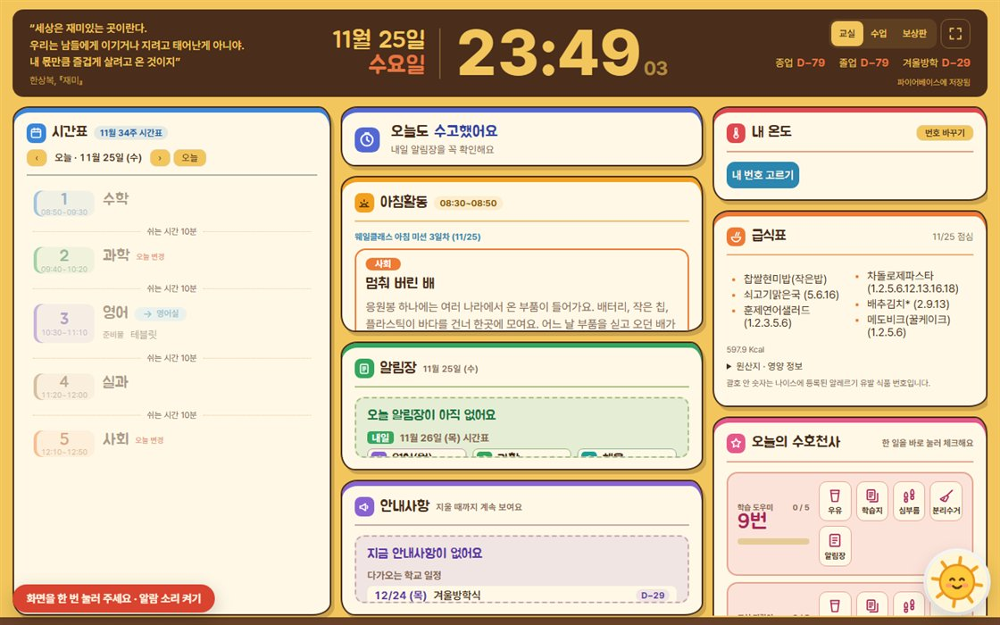
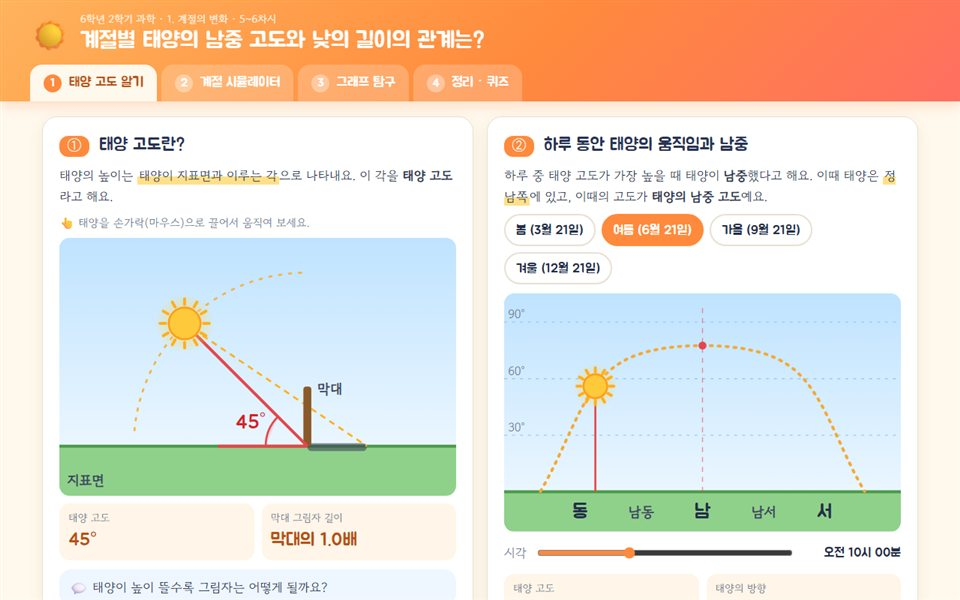
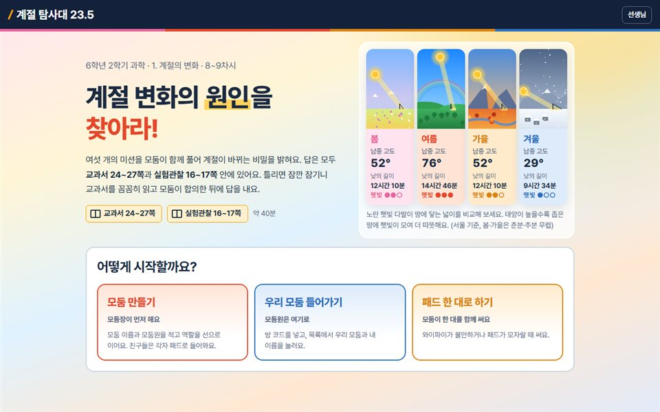
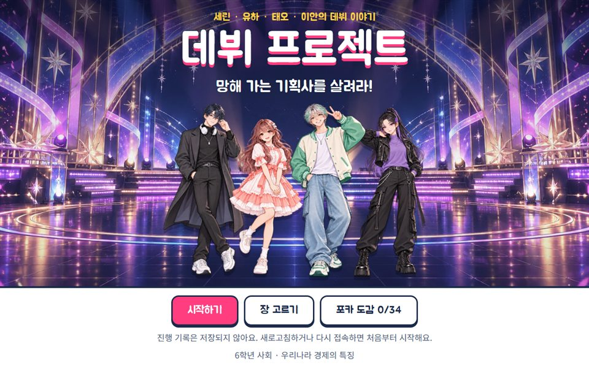
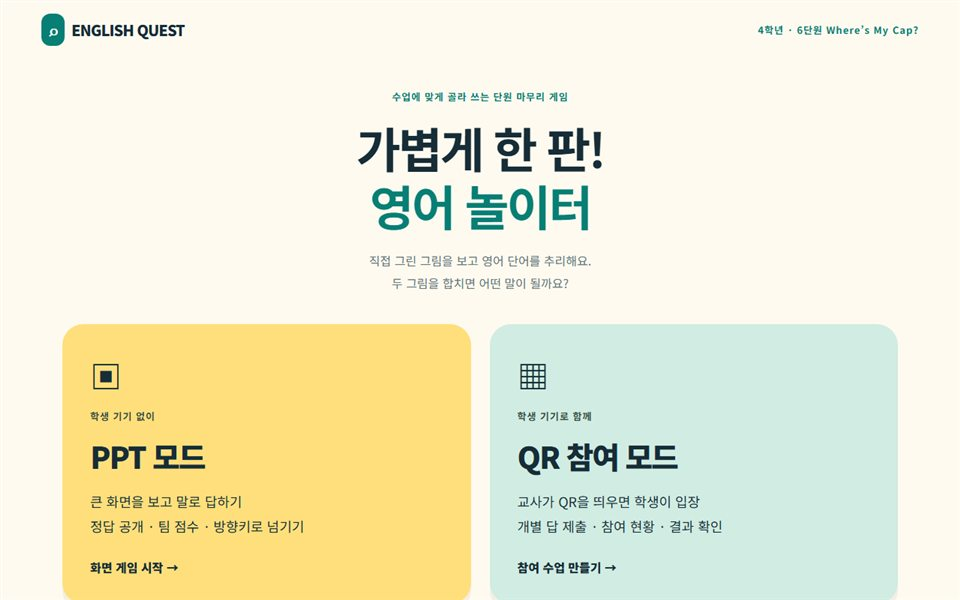
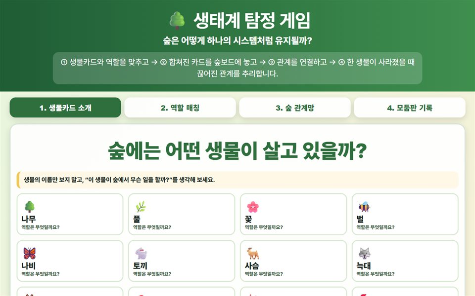
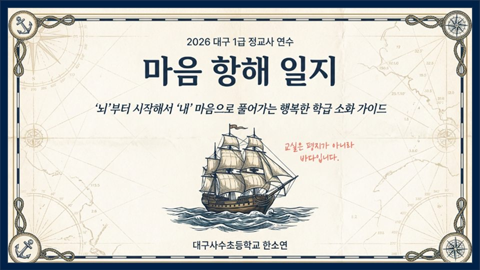

“세상은 재미있는 곳이란다.한상복, 『재미』
우리는 남들에게 이기거나 지려고 태어난 게 아니야.
내 몫만큼 즐겁게 살려고 온 것이지”
AI·디지털 수업 설계 영어 말하기 사회정서교육 수업 웹앱 개발
학력
- 대구교육대학교 교육대학원 초등영어교육전공 석사과정
- 대구교육대학교 초등교육과 졸업
현직
- 대구사수초등학교 교사, 6학년 담임
- EBS 영어교육방송 활용교사 13기
- 대구창의융합교육원 해설지원단 AI·SW 영역
- 대구 초등 마음교육 연구회(사회정서교육 교사 연구회) 총무
강의
- 1급 정교사 자격연수 「행복한 학급을 위한 마음 항해일지」 강사 대구연수원
- 빅테크와 함께하는 AI·디지털 활용 영어수업 직무연수 강사 대구광역시교육청
- 다문화교육 전문가 양성(심화과정) 직무연수 강사 대구광역시교육청
- 새 학기 학급경영 연수 강사 대구연수원, 대구동평초
- 천재 T셀파 수업 혁신 연구대회 수상자 릴레이 특강 강사 천재교육
- 디지털새싹 캠프 교내 운영과 강사 2회, 1~6학년 42명 한국과학창의재단
- 온샘배움터 정착 연수 강사 다수 대구미래교육연구원
- 온샘화상 영어 말하기 수업 운영교사, 3개 과정 대구미래교육연구원
- 초등 찾아가는 SW·AI 교육 역량강화 연수 강사 다수 대구광역시교육청
- 학부모 AI 디지털교과서 이해 교육 강사, 학부모 38명 대구삼영초
- 찾아가는 학교 컨설팅 코디네이터와 강사 한국과학창의재단
경력
- 스쿨포유 원격수업 콘텐츠 강의교사, 영어 한국교육개발원
- 과학관 AI 교육 교사연구회 연구자 국립중앙과학관
- 이주배경학생 통합지원 챗봇 개발 협의회 위원 대구광역시교육청
- 초등 사회정서교육 검토위원 한국교육개발원
- 대구e-스터디 미래형 과정 TF 대구미래교육연구원
- 대구사수초등학교 교사
- 스쿨포유 원격수업 콘텐츠 강의교사, 과학 한국교육개발원
- EBS 영어교육방송 활용교사 10~13기 한국교육방송공사
- 충청남도 초등교사, 보령대남초 등
수상
- 2026년 EBSe·AI 펭톡 활용·확산 공모전 대상 한국교육방송공사
- 2025 AI 펭톡 활용수업 우수사례 공모전 최우수상 한국교육방송공사 사장
- 2025 천재 T셀파 수업 혁신 연구대회 우수상 천재교육
- 교육장 표창, 환경교육 유공 충청남도보령교육지원청
자격과 연수
- Google 공인 트레이너 Google for Education
- 교실혁명 선도교사 양성 연수 이수 한국교육학술정보원
연구와 집필
- 석사학위논문 「초등 영어 읽기 수업에서 나타나는 읽기 조절 책임의 이양 과정」
- 사회정서교육 프로그램 17차시 원고와 PPT 개발 교육부 사업
- 과학관 연계 AI 수업 「기상예측 UNLOCK」 4차시 개발 국립중앙과학관
- T셀파 국어 6-1 서술형 평가문항 천재교육
- 국어 평가문항 개발 폭스에듀
- 수학 강의영상 100편 개발 충남에듀테크연구회
수업 웹앱

해동성국 교실판
우리 반 교실 TV와 학생 패드에 함께 띄우는 학급 교실판. 시간표, 알림장, 급식표, 1인 1역과 수업 루틴 체크. 우리 반 전용이라 화면만 공개.

계절과 태양 탐구실
6학년 과학, 계절의 변화 5~6차시
학생용 열기
계절 탐사대 23.5
6학년 과학, 계절의 변화 8~9차시
학생용 열기
데뷔 프로젝트: 기획사를 살려라
6학년 사회, 우리나라 경제의 특징 1~7차시
학생용 열기
영어 놀이터
4학년 영어, 6단원 Where's My Cap?
학생용 열기
생태계 탐정 게임
6학년 과학, 영재 공개수업. 공개 링크 준비 중

행복한 학급을 위한 마음 항해일지
1급 정교사 자격연수 강의 자료, 2026
강의 주제
- 온샘배움터와 웨일 클래스로 여는 블렌디드 수업
- AI·디지털 수업 설계와 교실 에듀테크
- AI 펭톡과 EBSe로 키우는 영어 말하기
- 생성형 AI로 다문화학생 맞춤 지원
- 학급경영과 사회정서교육
- 학부모를 위한 AI 디지털교과서 이해